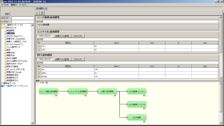
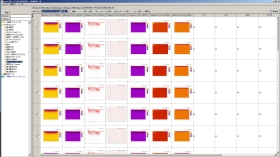
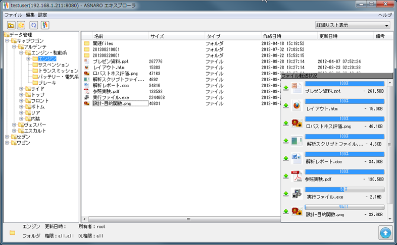
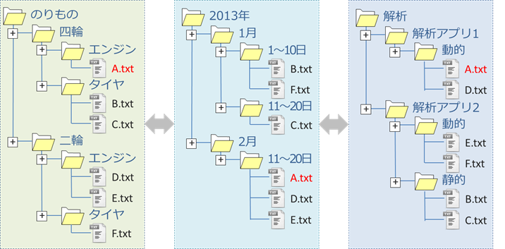
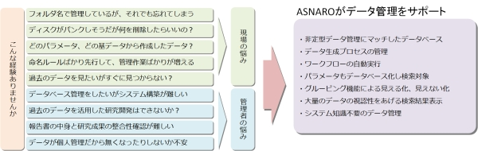

エンジニアリングデータ管理システム 『 ASNARO 』
エンジニアリングデータ管理システム『ASNARO』 - 目次
- 概要
- 『ASNARO』について
- 主な機能
概要
ASNARO（あすなろ）は、 研究フロー統合管理システム『 RCM System Software 』を基盤とした研究開発向けに開発されたプラットフォームです。ユーザーフレンドリーなGUIによる操作のみで、データベース設計や困難なコーディングが必要ない画期的なデータベースシステムです。CAE・CFDによるシミュレーションや実験、分析などの従来手動で行っているデータ算出に対し、ASNAROワークフローでは算出プロセスを自動化することができます。データ算出と同時にデータの関連付け管理を行うことができます。担当者任せのデータ生成業務や属人的な管理手法から脱却し、開発業務や管理手法の標準化を実現します。ASNAROエキスプローラは、格納したファイルやデータ処理結果に付けられたメタ情報により自動分類することができ、データ処理結果をWindowsのExplorerのような階層フォルダを様々な分類ツリー（仮想フォルダツリー）で表示できます。
『ASNARO』によって、効率的に業務を推進することができます。
＜ASNAROワークフロー＞

＜検索画面＞

＜ASNAROエキスプローラ＞

＜仮想フォルダツリーイメージ＞

ASNAROコンセプト
『 ASNARO 』により業務のムダをなくし、より創造性の高い業務に専念できます。『ASNARO』は、研究開発の現場で日常的に算出されている非定型・非定常なデータの管理に着目して開発されています。
データベース構築や登録の省力化、業務の自動化、プロセスの管理機能の充実、検索方法の充実を図り、誰でも扱いやすい汎用的なシステムを目指して開発されています。

『 ASNARO 』はデータ生成からデータ登録・管理までを自動化・標準化する革新的システムです
◆ 『 ASNARO 』の主な特長- 非定型なCAEや実験データの自動データベース化
- 非定型・非定常なデータを利用者は意識することなくデータベース化できます
- データ生成手順の自動化・標準化
-
ワークフローによるデータ生成は、ボタン一つの操作で誰でも簡単に実行できます
専任者に頼らない解析・分析業務による標準化が可能です - データ管理業務の飛躍的な効率化
-
5W1Hまで自動データベース化するため、手動によるフォルダ管理等が不要です
圧倒的な業務効率化を実現します - 生成データの一元管理
-
ASNAROサーバから自動実行・自動データベース化を行うため、データアクセスの一元化と共に、データの管理・共有・秘匿などのデータアクセスマネジメントも実現します
- データベース設計・構築が不要な画期的システム
-
GUIによる操作だけで、自動的にデータベースが構築されます
データベースの専門的な知識を必要とせず、無意識のうちにデータベース構築からデータ登録まで行えます - データ生成プロセスまで完全管理
-
データ生成に必要なファイルやファイル内容情報（パラメータ等）、メタ情報まで全ての情報を管理することはもちろんのこと、データの生成プロセスまで管理できます
- 仮想フォルダツリー表示
-
格納したファイルやデータ処理結果に付けられたメタ情報により自動分類することができ、データ処理結果をWindowsのExplorerのような階層フォルダを様々な分類ツリー（仮想フォルダツリー）で表示できます。
- マルチベンダー対応
-
マルチベンダー志向のシステムですので、現在お使いのアプリケーション、仕組みを活用できます
オープンソースのソルバや独自開発コードも標準化・自動化することができます